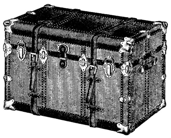

(défaire son)
DEUIL
"C'est si ennuyeux, le deuil ! A chaque instant il faut se rappeler qu'on est triste." Jules RENARD
Notre société fait bien souvent silence au sujet de la notion de la mort, tout aussi bien la mort physique que la mort symbolique présente dans chaque passage d’étape de vie. Pourtant, dans de nombreuses traditions, l’exploration de la notion de finitude est un élément essentiel de l’apprentissage de la vie. Ne pas affronter cet aspect de la vie fait parfois tendre à l’hésitation, à l’évitement.
Généralement le deuil est une étape qui suit la disparition d'une personne mais il concerne également la fin d'une étape de vie importante comme un mariage, une carrière professionnelle, une relation chère, le départ des enfants du foyer, etc. Il s'applique égalemnt à la dimension matérielle. On parle de deuil lorsque il y a une sensation de perte. Il se caractérise par un sentiment de manque, de tristesse et une souffrance face à la perte. Bien que le deuil soit un processus psychologique naturel, il arrive qu'il se bloque, entrainant un mal être profond pouvant aller jusqu'à la dépression.
Etymologiquement, "deuil" vient du latin "dolere" qui signifie souffrir, ainsi le deuil se vit dans la souffrance, bien qu’il soit un phénomène normal et universel. L’absence d’affliction témoigne au contraire d’une réaction vectrice de complcations, voire de pathologies du deuil. La nature de la relation qui unissait l’objet à l'endeuillé tient un rôle déterminant dans l’issue du deuil, dont les composantes demeurent, pour cette raison, personnelles, individuelles et par conséquent non comparables. Le deuil constitue un authentique traumatisme psychique et physique, considéré comme un stress violent vécu selon la personnalité de chacun qui connaît un bouleversement.
Et le deuil nous concerne tous. La perte d'un objet important (proche, intime) marque une rupture dans nos vies. Cette rupture interagit avec un collectif, les lieux où nous vivons ou encore les structures sociales qui norment nos existences. Face à l'apparente solitude du deuil, la disparition de l'objet interroge notre identité en tant qu'êtres fondamentalement relationnels. Traverser un deuil, c’est se retrouver confronté à la violence et au non-sens de la perte sur lesquels aucun mot, de prime abord, ne peut être posé. C’est pourtant à partir de cet indicible et incommunicable du deuil que peut émerger la question du sens et d’un rapport à soi, aux autres et au monde redéfini par la perte.
Il est classique en psychologie d'entendre "travailler son deuil." Cette approche scientifique conçoit également une théorie par étape. Appuyons nous sur le modèle de KUBLER-ROSS, psychiatre suisse, qui postule cinq étapes qui composeraient le deuil. Ces cinq étapes sont le déni, la colère, le marchandage, la dépression et l'acceptation. Si factuellement, ces étapes peuvent exister dans une progression, le fait du travail demandé sur chaque étape peut implicitement présupposer d'échouer lors d'une étape , ce qui favoriserait un blocage temporel : le deuil pathologique !
Généralement le deuil est une étape qui suit la disparition d'une personne mais il concerne également la fin d'une étape de vie importante comme un mariage, une carrière professionnelle, une relation chère, le départ des enfants du foyer, etc. Il s'applique égalemnt à la dimension matérielle. On parle de deuil lorsque il y a une sensation de perte. Il se caractérise par un sentiment de manque, de tristesse et une souffrance face à la perte. Bien que le deuil soit un processus psychologique naturel, il arrive qu'il se bloque, entrainant un mal être profond pouvant aller jusqu'à la dépression.
Etymologiquement, "deuil" vient du latin "dolere" qui signifie souffrir, ainsi le deuil se vit dans la souffrance, bien qu’il soit un phénomène normal et universel. L’absence d’affliction témoigne au contraire d’une réaction vectrice de complcations, voire de pathologies du deuil. La nature de la relation qui unissait l’objet à l'endeuillé tient un rôle déterminant dans l’issue du deuil, dont les composantes demeurent, pour cette raison, personnelles, individuelles et par conséquent non comparables. Le deuil constitue un authentique traumatisme psychique et physique, considéré comme un stress violent vécu selon la personnalité de chacun qui connaît un bouleversement.
Et le deuil nous concerne tous. La perte d'un objet important (proche, intime) marque une rupture dans nos vies. Cette rupture interagit avec un collectif, les lieux où nous vivons ou encore les structures sociales qui norment nos existences. Face à l'apparente solitude du deuil, la disparition de l'objet interroge notre identité en tant qu'êtres fondamentalement relationnels. Traverser un deuil, c’est se retrouver confronté à la violence et au non-sens de la perte sur lesquels aucun mot, de prime abord, ne peut être posé. C’est pourtant à partir de cet indicible et incommunicable du deuil que peut émerger la question du sens et d’un rapport à soi, aux autres et au monde redéfini par la perte.
Il est classique en psychologie d'entendre "travailler son deuil." Cette approche scientifique conçoit également une théorie par étape. Appuyons nous sur le modèle de KUBLER-ROSS, psychiatre suisse, qui postule cinq étapes qui composeraient le deuil. Ces cinq étapes sont le déni, la colère, le marchandage, la dépression et l'acceptation. Si factuellement, ces étapes peuvent exister dans une progression, le fait du travail demandé sur chaque étape peut implicitement présupposer d'échouer lors d'une étape , ce qui favoriserait un blocage temporel : le deuil pathologique !

Aussi, l'expression populaire "faire son deuil" est un paradoxe absolu. Le deuil est par excellence un moment d’impuissance, un événement réel qui nous percute et nous n’y pouvons rien. Or le verbe "faire" sous-entendrait qu’on pourrait y opposer un acte, une volonté, quelque chose… Malgré nous, nous avons toujours besoin de croire que nous pouvons agir devant un événement. Car il semble que, dans le deuil, tout le travail consiste plutôt à aller dans le sens de l’impuissance, de l’acceptation de la perte. Il s’agirait plutôt de "défaire son deuil" car c'est avant tout, une expérience du vivant qui jalonne la maturité croissante de l'être. Le dueil est nécessaire pour se positionner dans son évolution psychique, grandir, mûrir et finir.
Si, au contraire, le deuil se conçoit comme une expérience, sa singularité lui donne une valeur, un sens, à l'inverse du coté normatif du travail de deuil par étape. Cette notion expérientielle favorise également une relativité temporelle dans sa gestion qui devient secondaire, là où le travail de deuil chronologise chaque étape. Psychiatriquement parlant, le deuil pathologique est diagnostiqué lorsque des symptômes sont encore présents après 12 mois de la perte ! Serait-ce le résultat d'un travail non terminé à temps (comme un mauvais élève) ? A l'inverse, concevoir l'expérience de dueil a cette dynamique de pouvoir faciliter l'intégration de l'objet perdu et de laisser une empreinte harmonieuse dans nos sphères psychiques par absence de pression temporelle. Ces dernières qui se redéfinissent symboliquement gommant l'intensité du manque et ainsi pouvoir s'inscrire avec pérennité dans nos consciences.
L’hypnose permet de travailler à un niveau inconscient et d’effectuer des deuils profonds et efficaces en gardant tout ce qu'il y a de bon de la perte et laisser partir ce qui est inutile, comme les émotions désagréables, la culpabilité, la douleur, la tristesse ou la nostalgie. (Dé)faire son deuil ne signifie donc pas oublier mais être capable de reprendre le cours de sa vie en intégrant la perte d’une façon différente. C'est s'autoriser à ranger la perte dans sa biographie. Cette étape peut devenir une véritable conseillère, amenant chaque acte à être plein, chaque instant à être vécu avec intensité et lucidité.
Si, au contraire, le deuil se conçoit comme une expérience, sa singularité lui donne une valeur, un sens, à l'inverse du coté normatif du travail de deuil par étape. Cette notion expérientielle favorise également une relativité temporelle dans sa gestion qui devient secondaire, là où le travail de deuil chronologise chaque étape. Psychiatriquement parlant, le deuil pathologique est diagnostiqué lorsque des symptômes sont encore présents après 12 mois de la perte ! Serait-ce le résultat d'un travail non terminé à temps (comme un mauvais élève) ? A l'inverse, concevoir l'expérience de dueil a cette dynamique de pouvoir faciliter l'intégration de l'objet perdu et de laisser une empreinte harmonieuse dans nos sphères psychiques par absence de pression temporelle. Ces dernières qui se redéfinissent symboliquement gommant l'intensité du manque et ainsi pouvoir s'inscrire avec pérennité dans nos consciences.
L’hypnose permet de travailler à un niveau inconscient et d’effectuer des deuils profonds et efficaces en gardant tout ce qu'il y a de bon de la perte et laisser partir ce qui est inutile, comme les émotions désagréables, la culpabilité, la douleur, la tristesse ou la nostalgie. (Dé)faire son deuil ne signifie donc pas oublier mais être capable de reprendre le cours de sa vie en intégrant la perte d’une façon différente. C'est s'autoriser à ranger la perte dans sa biographie. Cette étape peut devenir une véritable conseillère, amenant chaque acte à être plein, chaque instant à être vécu avec intensité et lucidité.
EN RELATION

PROJET
LE TEMPS
EMOTION
TRANSE GENERATION
SOLITUDE
CULPABILITE